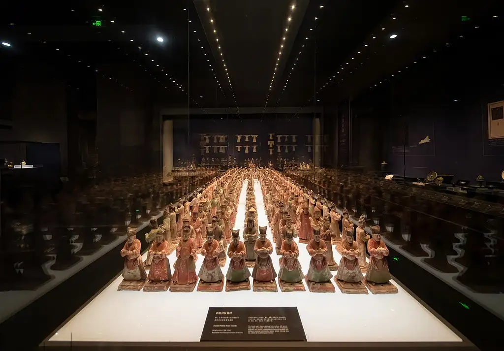
欢迎来到“智鉴文渊”
博物馆珍藏了从新石器时代至清代的丰富陶器文物，展现了陶器艺术的完整发展脉络。
本系统精选馆藏陶器精品，通过四个专题展区，带您领略陶器艺术的演变历程和工艺成就。
从仰韶文化的彩陶到汉唐的釉陶，从西周的礼器到宋元的日用器，每一件陶器都承载着厚重的历史文化信息。
智慧博物馆的智能知识服务平台

博物馆珍藏了从新石器时代至清代的丰富陶器文物，展现了陶器艺术的完整发展脉络。
本系统精选馆藏陶器精品，通过四个专题展区，带您领略陶器艺术的演变历程和工艺成就。
从仰韶文化的彩陶到汉唐的釉陶，从西周的礼器到宋元的日用器，每一件陶器都承载着厚重的历史文化信息。
涵盖新石器时代至清代各时期代表性陶器
灰陶、彩陶、釉陶、三彩等多种工艺类型
礼器、日用器、明器、建筑构件等各类用途
快速定位您感兴趣的陶器展品
通过关键词搜索或年代筛选，快速找到您感兴趣的陶器展品
有任何关于陶器的问题，都可以在这里提问（AI大模型驱动）
纵览中国陶器八千年发展历程，了解各时期代表性器物与工艺特征
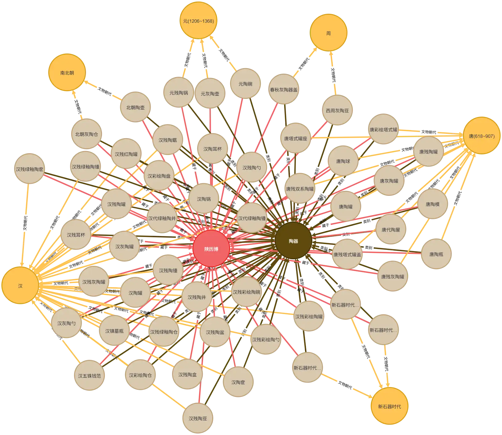
新石器时代（约公元前6000年-前2000年）是中国陶器的起源时期。仰韶文化的彩陶以其精美的彩绘纹饰闻名，纹样多取材于自然界的鱼纹、蛙纹、几何纹等，体现了原始人类的宗教信仰和审美意识。这一时期的陶器主要以红陶、灰陶为主，制作工艺从手制逐渐发展到轮制。
夏商周时期（约公元前2070年-前256年），陶器制作技术显著进步，出现了印纹硬陶和白陶。商代白陶胎质洁白，纹饰精美，多为贵族专用礼器。西周时期陶器器型更加规整，灰陶成为主流，形成了完整的礼器组合体系。
秦汉时期（公元前221年-公元220年），铅釉陶器的出现是制陶工艺的重要突破。汉代陶器种类丰富，既有仿青铜礼器，也有反映日常生活的模型明器。彩绘陶在汉代达到高峰，纹饰题材多样，色彩鲜艳。
魏晋至唐代（公元220年-907年），唐三彩成为唐代陶器的杰出代表。三彩器以黄、绿、白三色为主，釉色交融流淌，形成绚丽多彩的艺术效果。唐代陶俑艺术达到巅峰，造型生动传神，反映了唐代社会的开放包容。
宋元明清时期（公元960年-1912年），瓷器成为日用器主流，但陶器在建筑、雕塑等领域继续发展。紫砂陶、琉璃陶、民俗陶器等各具特色，形成了丰富多彩的地方窑系，至今仍在传承发展。
探索陶器起源与礼制形成，了解从原始陶器到礼制用器的艺术演变
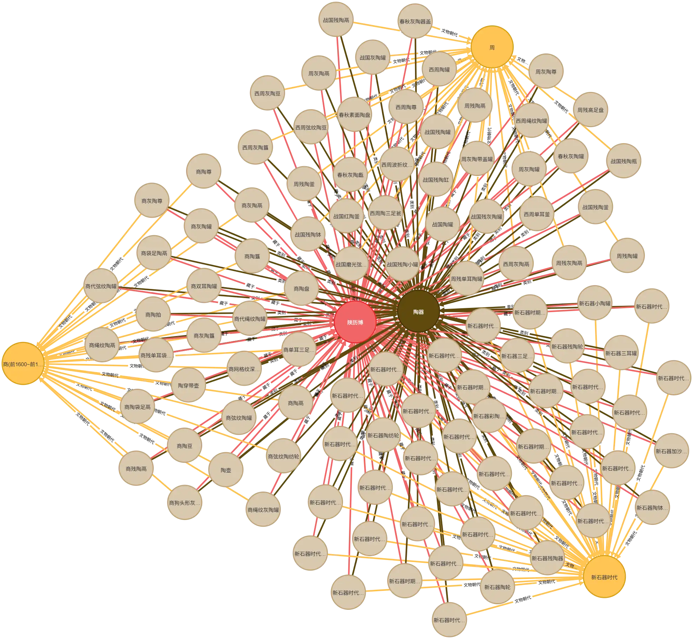
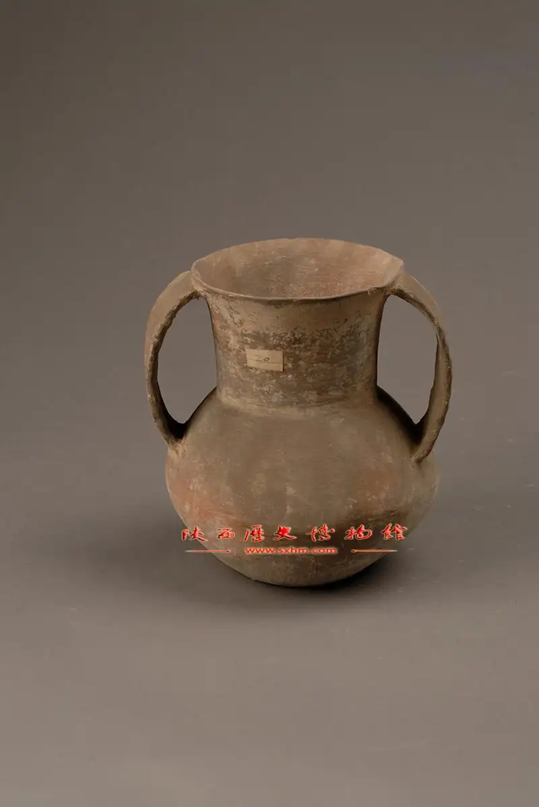

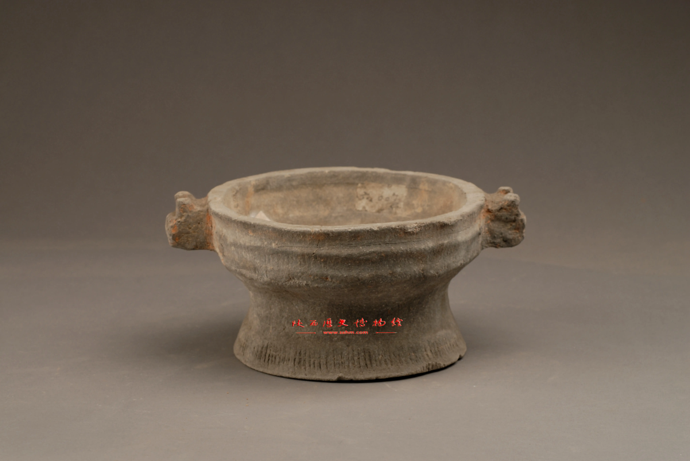
新石器时代是中国陶器的起源时期，陕西地区的仰韶文化、龙山文化、齐家文化等都留下了丰富的陶器遗存。仰韶文化彩陶以其精美的彩绘纹饰闻名于世，纹样多取材于自然界的鱼纹、蛙纹、几何纹等，体现了原始人类的宗教信仰和审美意识。
夏商时期，陶器制作技术显著进步，出现了印纹硬陶和白陶。商代白陶胎质洁白，纹饰精美，多为贵族专用礼器。这一时期陶器开始出现明确的礼器功能，与青铜器共同构成了商代礼制体系。
西周时期，陶器器型更加规整，灰陶成为主流。鬲、簋、豆、罐等礼器组合完整，反映了周代的礼制规范。西周陶器多素面或饰以绳纹、弦纹，风格朴实庄重，体现了周文化崇尚质朴的审美趣味。
春秋战国时期，陶器制作趋于精细化，彩绘陶开始流行。战国时期出现了暗纹陶、磨光陶等新工艺，陶器装饰更加丰富多彩。各诸侯国陶器风格各异，秦国的灰陶器以其规整的造型和细腻的胎质著称，为后来秦汉陶器的发展奠定了基础。
早期陶器从实用器逐渐发展为礼器，其形制、纹饰的变化反映了中国古代社会结构、宗教信仰和审美观念的演变，为研究中国古代文明提供了重要的实物资料。
探索汉唐盛世陶器艺术的辉煌成就，了解釉陶技术与雕塑艺术的高度发展
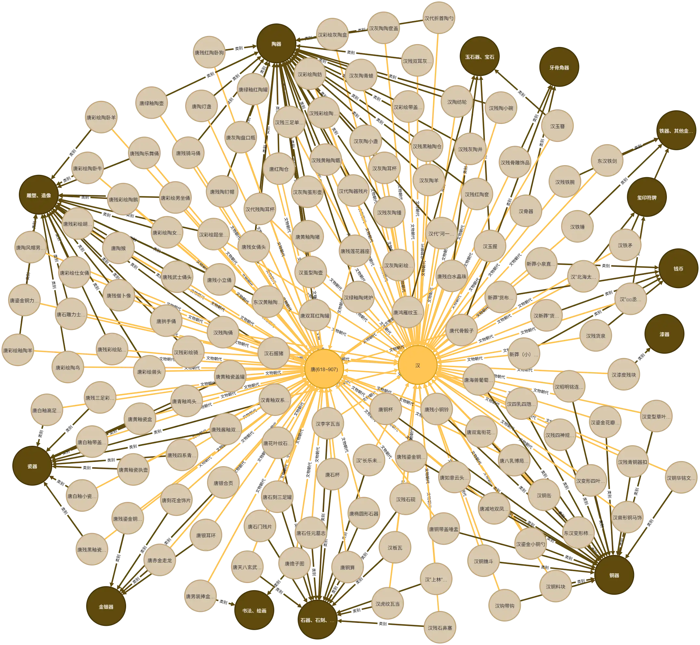
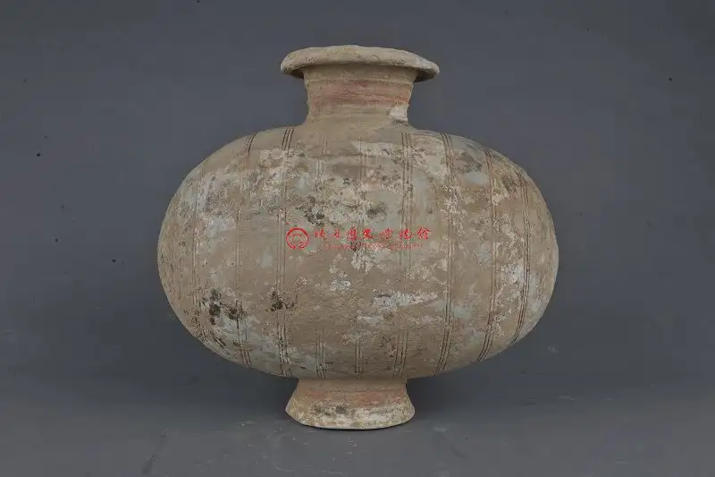
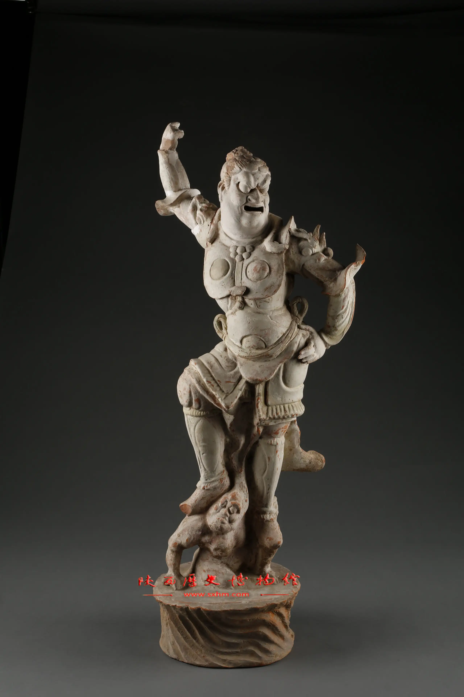

汉代（公元前202年-公元220年）陶器在秦代基础上进一步发展，形成了雄浑大气的艺术风格。铅釉陶器的出现是汉代制陶工艺的重要突破，绿釉、黄釉、褐釉等釉色丰富了陶器的装饰效果。
汉代陶器种类丰富，既有仿青铜礼器的鼎、壶、盒等，也有反映日常生活的仓、灶、井等模型明器。彩绘陶在汉代达到高峰，纹饰题材包括云气纹、四神纹、狩猎纹等，色彩鲜艳，线条流畅。
唐代（公元618年-907年）是中国陶器艺术的黄金时期，唐三彩更是唐代陶器的杰出代表。三彩器以黄、绿、白三色为主，间以蓝、褐等色，釉色交融流淌，形成绚丽多彩的艺术效果。
唐代陶俑艺术达到巅峰，人物俑、动物俑造型生动传神，反映了唐代社会的开放包容和多元文化交融。天王俑、武士俑威武雄壮，女俑丰腴端庄，胡人俑特征鲜明，都是唐代陶塑艺术的精品。
唐代陶器还深受西域文化影响，凤首壶、胡瓶等器型具有明显的外来文化特征，体现了丝绸之路文化交流的成果。
探索宋元明清时期陶器的多元化发展，了解民间陶艺与宫廷用器的不同风貌
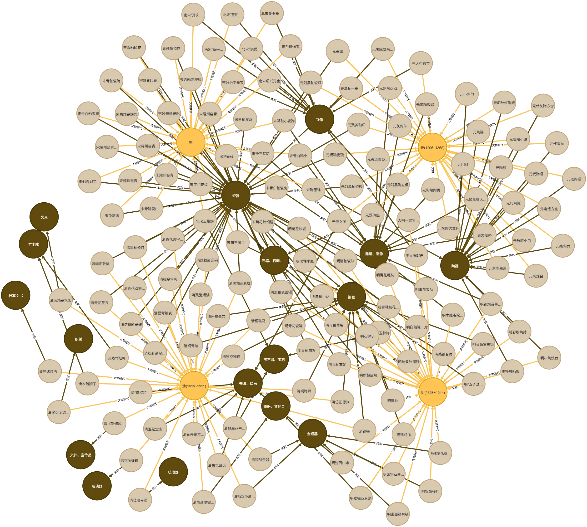
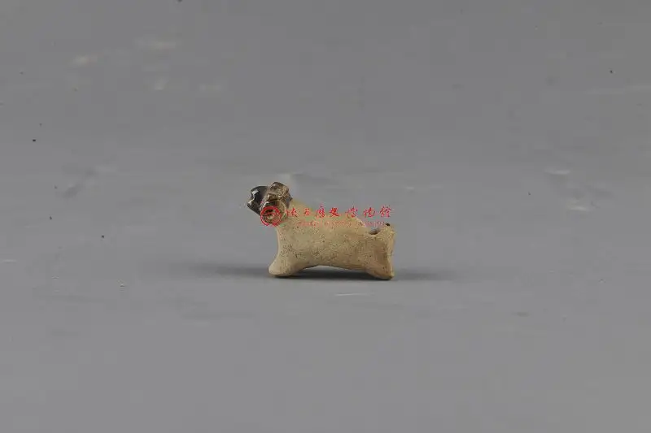

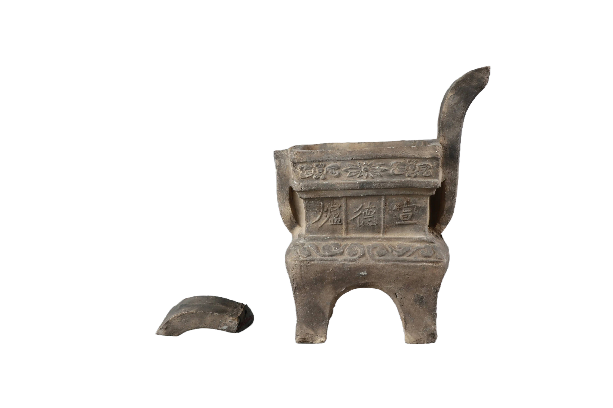
宋代（公元960年-1279年），瓷器成为日用器的主流，但陶器仍在建筑、雕塑等领域发挥着重要作用。宋代陶器风格质朴典雅，褐釉、黑釉等单色釉陶器流行，体现了宋代文人崇尚的简约审美。
宋代陶俑虽不及唐代华丽，但造型更加写实，表情细腻，反映了宋代社会的世俗化倾向。建筑用陶在宋代得到很大发展，琉璃瓦、吻兽等构件制作精美，色彩鲜艳。
元代（公元1271年-1368年）陶器融合了蒙古族文化和汉族传统，形成了粗犷豪放的风格。元代琉璃陶器成就突出，孔雀蓝、翡翠绿等釉色鲜艳夺目，多用于寺庙建筑装饰。
明代（公元1368年-1644年），紫砂陶开始兴起，宜兴紫砂壶以其独特的材质和工艺受到文人雅士的喜爱。明代建筑琉璃工艺更加成熟，故宫、天坛等皇家建筑大量使用琉璃构件。
清代（公元1644年-1912年）陶器在仿古和创新两方面都有发展。一方面仿制古代陶器，追求古雅韵味；另一方面发展出各种民俗陶器，造型多样，装饰繁复，反映了清代社会的多元文化特征。